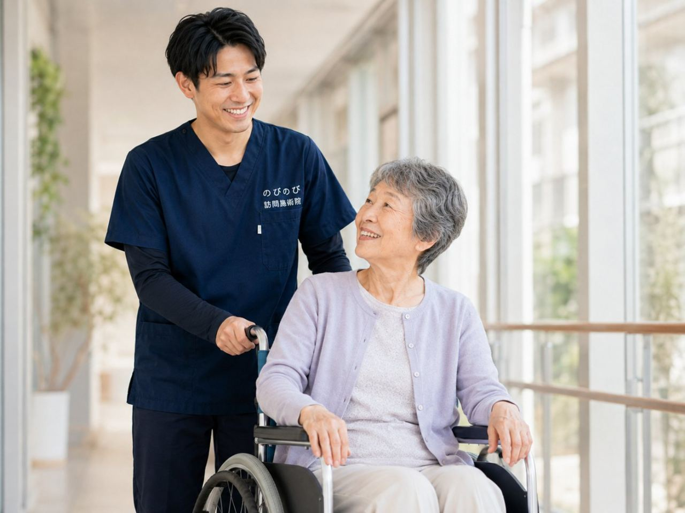

高齢の方の貧血は、めまい・ふらつき、少し動いただけの息切れ、抜けないだるさ、顔色の悪さなどとしてあらわれ、転倒のきっかけになることもあります。訪問鍼灸マッサージは、貧血そのものを治療するものではありませんが、主治医の管理のもとで、こわばった筋肉をやわらげ、だるさや冷え、めぐりの悪さを軽くして過ごしやすさを支える役割を担えます。国家資格を持つ施術者が、その日の体調に合わせて力を加減し、立ちくらみに気をつけながら無理をしない形でていねいにケアします。医師の同意書があれば医療保険の対象で、1割負担の方の自己負担は1回およそ395円が目安です。要介護認定はいりません。介護保険の限度額とも別枠です。貧血は原因を調べて治療するのが基本なので、診断は主治医にゆだね、施術は暮らしを支える役割にとどめます。ここでは、家で気をつけたい点と、ケアでできることを整理します。出方には個人差があり、少しずつ進むぶん気づきにくいこともあります。
この記事のポイント
かかりつけの医師の管理を前提に、体調を見ながら無理をしない形で受けられる場合が多いです。立ちくらみに気をつけ、ふらつきが強い日は施術を控える判断もします。まずはご相談ください。
高齢者の貧血で、どんな変化が起きやすい？
貧血は、血液のなかで酸素を運ぶ力が下がった状態です。高齢の方では、めまいやふらつき、立ちくらみ、少し動いただけの息切れ、抜けないだるさ、顔色の悪さなどとしてあらわれます。ふらつきは転倒のきっかけにもなり、活動をためらう原因にもなります。
こうした体の重さやめぐりの悪さに、家にいながら受けられるのが訪問鍼灸マッサージです。貧血は血液検査で分かり、原因を調べて治療するのが基本なので、診断と治療は主治医にゆだね、施術は暮らしを支える役割になります。
のびのびができること｜動いたあとの息切れ・だるさへ
のびのびの訪問鍼灸マッサージでは、動きが減って固くなった筋肉をやわらげ、だるさや冷え、めぐりの悪さに、手技やお灸のあたたかさで働きかけます。こわばりが進まないよう、負担にならない程度に関節を動かす運動も、鍼灸とあわせて行います。ねらいは、貧血を治すことではなく、体の重さやこわばりをやわらげて過ごしやすくすること。
手足の先まで血のめぐりが促されると、冷えや重だるさが和らぐことが期待できます。ただし、出方には個人差があり、少しずつ進むぶん気づきにくいこともあります。心地よさを大切にした、その方の体調に合わせたケアを行います。
立ちくらみに気をつける｜起き上がりはゆっくり
貧血のある方のケアでいちばん気をつけたいのが、立ちくらみによる転倒です。のびのびでは、施術の前後で急に起き上がらないよう、ゆっくり体を起こすお手伝いをし、めまいの様子を見ながら進めます。長く同じ姿勢を続けない、うつ伏せを避けるなど、体に合わせて配慮します。
ふらつきが強い日や体調がすぐれない日は、施術を軽くしたり控えたりする判断もします。安全を最優先に、無理をしないのが基本。ご家族にも、起き上がりや移動のときの見守りをお願いすることがあります。
原因を調べることが大切｜医療への橋渡し
高齢者の貧血には、栄養の不足だけでなく、体のどこかからの出血などが隠れていることもあります。そのため、原因を調べることが大切です。訪問鍼灸マッサージの施術者は、顔色やだるさ、ふらつきの様子で気づいたことをご家族や医療に共有し、必要なら受診の後押しをします。
施術で貧血を診断・治療するわけではありませんが、変化に気づく目として、医療につなぐ橋渡しの役割を担えます。気になるサインは、早めに主治医に相談しましょう。
主治医との連携｜原因の治療を優先しながら
貧血のケアは、主治医による原因の診断と治療が土台です。訪問鍼灸マッサージは、その治療を優先したうえで、動いたあとの息切れや肩・首まわりのこわばりをやわらげる役割になります。のびのびでは、施術で気づいた体の様子を、医師やケアマネジャー、訪問看護と共有しながら進めます。
ふらつきや息切れ、顔色の変化など、医療につなぐべきサインに気づいたらお伝えします。うかがう時間帯も、食事や服薬、休息のリズムに合わせて相談しながら決めていきます。
料金と保険｜1回およそ395円から、限度額とは別枠
のびのびの訪問鍼灸マッサージは、医師の同意にもとづく医療保険で受けられます。1回の施術は総額3,950円。1割負担の方でおよそ395円が目安になります。月額の目安は施術の回数で変わりますので、料金のページをご確認ください。
医療保険のしくみなので介護保険の限度額とは別枠になり、要介護認定も必要ありません。対応エリア内は一律料金で、出張料や交通費の上乗せはありません。始める前に負担額と回数の見通しをお伝えします。うかがっている市区は「対応エリアのページ」に一覧があります。
受けるまでの流れ｜相談から始められます
はじめは、対象になりそうかの確認や、体の状態・ふらつきの様子を見せていただく相談から始められます。医師の同意書については当院が手続きを進めます。無理に勧めたり、急かしたりすることはありません。
だるさやふらつきが続いてつらいとき、まずは気軽にご相談ください。体調を見ながら進めますので、気になる点は遠慮なくお伝えください。合わなければ、無理に続けていただく必要はありません。
ご家族へ｜ふらつきのサインは早めに
貧血のある方を支えるご家族には、日々の様子の変化に気づける強みがあります。顔色が悪い、ふらつく、息切れが増えた、だるさが抜けない、といったサインは、早めに医療へ伝えることが大切です。訪問鍼灸マッサージの施術者も、顔色や息づかい、ふらつきの様子で気づいたことをお伝えします。
転倒を防ぐ見守りとあわせて、数百円で続けられる体のケアの積み重ねが、過ごしやすさや気持ちの支えにつながることもあります。施術が病気そのものを治すわけではありません。変化の出方にも個人差があります。
よくある質問
貧血があっても訪問鍼灸マッサージを受けられますか？
かかりつけの医師の管理を前提に、体調を見ながら無理をしない形で受けられる場合が多いです。立ちくらみに気をつけ、ふらつきが強い日は施術を控える判断もします。まずはご相談ください。
ふらつきやだるさはよくなりますか？
訪問鍼灸マッサージは貧血を治すものではありません。こわばりやだるさに寄り添い、動きやすさを支える役割で、感じ方には個人差があります。原因の診断・治療は主治医が行います。
貧血の原因は施術で分かりますか？
施術では分かりません。高齢者の貧血には出血などが隠れることもあるため、血液検査などで原因を調べることが大切です。施術者は気づいた変化を医療に共有します。
いくらかかりますか？
医師の同意書があることが前提で、医療保険が使えます。施術1回の総額は3,950円で、1割負担の自己負担は約395円が目安。介護保険の限度額とは切り離して考えていただけます。認定も不要です。